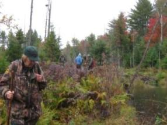

|
WetlandsFairlee is blessed with three important wetland complexes: the Fairlee Bog (also called Fairlee Bog Pond), the Fairlee Marsh Wildlife Management Area (WMA), and the “Great Fairlee Wetland.” Each is a completely different type of ecosystem from the others. |
Fairlee Bog Pond, located on 142 acres of Nature Conservancy land in the hills north of Lake Morey, is our only true “bog.” A bog is a marsh that has accumulated enough dead sphagnum and other mosses and plants to form peat, which in turn supports a special array of plants requiring very acidic conditions, such as pitcher plants. Bogs have extra environmental value as carbon sinks, meaning they absorb and sequester large amounts of carbon so it is not released into the atmosphere unless disturbed or burned. While the Nature Conservancy allows visitors, including hunters, we could not locate a map of permitted access points through the surrounding private properties. If we find a good access trail or contact for permission, we will add it here.
The Fairlee Marsh is a 60-acre water course starting from just below the Lake Morey outlet and opening up into a broad marshy inlet where it enters the Connecticut River. It is owned by the State of Vermont and managed by the Vermont Fish & Wildlife Department as protected wildlife habitat. Access is by boat from the Connecticut River, and there is even a small public campsite on the river shore near its mouth.
The Fairlee Wetland
“A wetland is a land area that is saturated with water, either permanently or seasonally, such that it takes on the characteristics of a distinct ecosystem. Primarily, the factor that distinguishes wetlands from other land forms or water bodies is the characteristic vegetation of aquatic plants, adapted to its unique hydric soil. Wetlands play a number of roles in the environment, principally water purification, flood control, and shoreline stability. Wetlands are also considered the most biologically diverse of all ecosystems, serving as home to a wide range of plant and animal life.”
- Wikipedia
“The Great Fairlee Wetland,” also called “Brushwood South Wetland,” is probably the most extensive and interesting wildlife habitat in Fairlee Forest. This 42-acre plus system of (at present) 39 interconnected beaver ponds, marshes, and seeps wraps around the west side of May Hill and follows the headwaters of Glen Falls Brook between May Hill and Bald Top towards Lake Morey. Twenty-five percent is in West Fairlee’s Brushwood Community Forest, the other 75% in Fairlee Forest, so we will simply call it the Fairlee Wetland here.
In his extensive 2013 report on the Brushwood South Wetlands, conservation biologist Brett Engstrom sums up his assessment as follows:
“These are a remarkable assemblage of wetlands, both because of their extent, fine condition, and diversity, and because of their setting. East of the Green Mountains, (i.e. the Vermont Piedmont biophysical region), wetlands of this extent (the 35‐acre beaver wetland complex) and density (including the 19 other wetlands) are uncommon. The equally large wetland complex found three tenths of a mile down the Mill Pond Brook drainage compounds the significance of the extent and diversity of wetlands in the Brushwood Forest….The other remarkable aspects to these Brushwood South Wetlands is their almost pristine condition, their remote setting, rare and uncommon plants, and wildlife. Only a couple individual patches of two invasive plants were noted in the all the wetlands visited. Furthermore, these wetlands sit in an extensive undeveloped forest area (roughly 10,000 acres) with only a few class 4 roads and camps. Such a large block of unfragmented forest in this section of the Connecticut Valley and downstream is highly unusual. Also, one rare aquatic plant and several vigorous colonies of an uncommon plant live in these wetlands, while one rare and 4 uncommon plant species occur in the surrounding uplands. Finally, there is enormous value of these wetlands and surrounding uplands for wildlife …
The watershed values of the South Wetlands extend the significance of the wetlands beyond their immediate vicinity. Through floodwater retention these wetlands play an important role in reducing the risk of damaging floods down the watershed. Post Tropical Storm Irene, the role of wetlands and other natural landscape features in ameliorating flood hazards has come to the fore. Beyond its biological and ecological values, the South Wetlands have intrinsic watershed values that benefit the public at large. ”
To see the “Great Fairlee Wetlands” video, featuring  presentations by Brett Engstrom, Susan Morse of “Keeping Track,” Orange County Forester David Paganelli, Audubon Vermont’s Steve Hagenbuch, and Steve Faccio of Vermont Center for Ecostudies, check out the Fairlee Public Library copy or stream from vimeo.
Per the 2013 wetlands report, Fairlee’s diverse wetland system presently contains six distinct kinds of swamp (i.e. forest wetlands), as well as ten marshes (i.e. characterized by herbaceous rather than woody plants), six seeps and seepage meadows (wet from underground aquifers), four vernal pools (i.e. seasonally dry), three perched wetlands or pools (i.e. no outlet), and at least nine beaver ponds. Since beavers actively reconfigure their landscape, a wetland system like this is constantly changing.